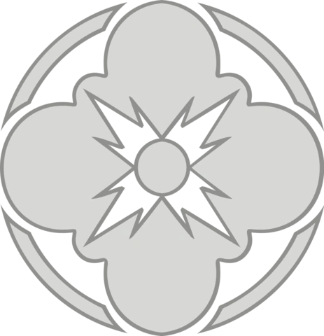

Світлийбік Сили, також відомий як Ашла, — один з аспектів Сили. Світлий бік був вирівняний зі спокоєм і використовувався для знання і захисту.Джедаї були основними практиками цього боку, через що були заклятими ворогами сітів, які слідували Темному боку Сили.
